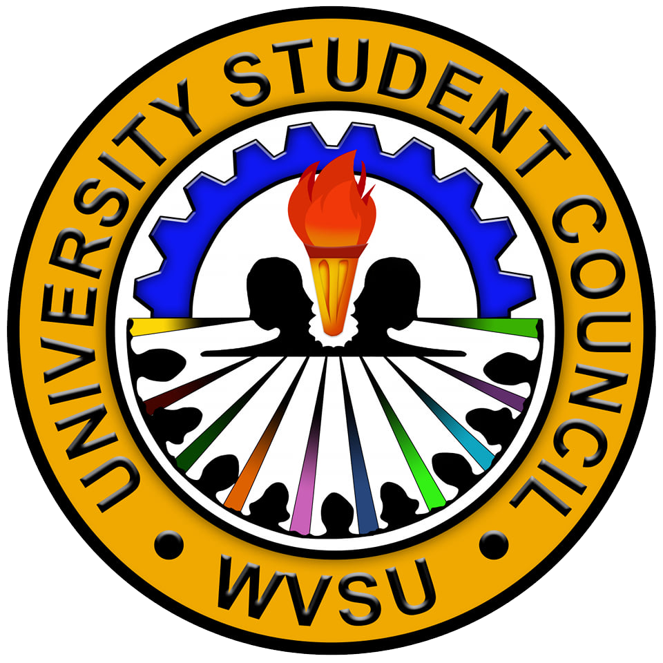

    <!-- Developed and designed by: Bayag, Galarosa, Antenorio, Flavio 2022 -->
<!DOCTYPE html>
<html lang="en">

<head>
    <meta charset="utf-8">
    <title>WVSU-USC | About</title>
    <meta content="width=device-width, initial-scale=1.0" name="viewport">
    <meta content="Free HTML Templates" name="keywords">
    <meta content="Free HTML Templates" name="description">

    <!-- Favicon -->
    <link href="../img/logo.png" rel="icon">

    <!-- Google Web Fonts -->
    <link rel="preconnect" href="https://fonts.gstatic.com">
    <link href="https://fonts.googleapis.com/css2?family=Poppins:wght@400;500;600;700&display=swap" rel="stylesheet"> 

    <!-- Font Awesome -->
    <link href="https://cdnjs.cloudflare.com/ajax/libs/font-awesome/5.10.0/css/all.min.css" rel="stylesheet">

    <!-- Libraries Stylesheet -->
    <link href="../lib/owlcarousel/assets/owl.carousel.min.css" rel="stylesheet">

    <!-- Customized Bootstrap Stylesheet -->
    <link href="../css/style.css" rel="stylesheet">
</head>

<body>
<!-- Navbar Start -->
<div class="container-fluid ">
        <div class="row border-top">
            <div class="col-lg-3 d-none d-lg-block">
            </div>
            <div class="col-lg-9">
                <nav class="navbar navbar-expand-lg bg-light navbar-light py-3 py-lg-0 px-0">
                    <button type="button" class="navbar-toggler" data-toggle="collapse" data-target="#navbarCollapse">
                        <span class="navbar-toggler-icon"></span>
                    </button>
                    <div class="collapse navbar-collapse justify-content-between" id="navbarCollapse">
                        <div class="navbar-nav py-0">
                            <a href="../index.html" class="nav-item nav-link active"></a>
                            <a href="../index.html" class="nav-item nav-link ">Home</a>
                            <a href="../html/news.html" class="nav-item nav-link ">USC News</a>
                            <div class="nav-item dropdown">
                                <a href="#" class="nav-link" data-toggle="dropdown">Documents<i class="fa fa-angle-down float-right mt-1" style="margin-left: 5px;"></i></a>
                                <div class="dropdown-menu position-absolute bg-secondary border-0 rounded-0 w-200 m-0">
                                    <a href="html/report/memo.html" class="nav-link">Memorandum<i class="float-right mt-1"></i></a>
                                    <a href="html/report/error-minutes.html" class="nav-link">Minutes of the Meeting<i class="float-right mt-1"></i></a>
                                    <a href="html/report/error-reso.html" class="nav-link">Resolution<i class="float-right mt-1"></i></a>
                                
                                    </div>
                                    </div>
                            
                                    <div class="nav-item dropdown">
                                        <a href="#" class="nav-link" data-toggle="dropdown">About<i class="fa fa-angle-down float-right mt-1" style="margin-left: 5px;"></i></a>
                                        <div class="dropdown-menu position-absolute bg-secondary border-0 rounded-0 w-200 m-0">
                                            <a href="html/about.html" class="nav-link">USC<i class="float-right mt-1"></i></a>
                                            <a href="html/devs.html" class="nav-link">Developers<i class="float-right mt-1"></i></a>
                                            <a href="html/officers.html" class="nav-link">Officers<i class="float-right mt-1"></i></a>
                                        
                                            </div>
                                            </div>

                    </div>
                
            </div>
        </div>
    </div>
<!-- Navbar End -->

   
    <!-- Header Start -->
    <div class="container-fluid page-header" style="margin-bottom: 90px;">
        <div class="container">
            <div class="d-flex flex-column justify-content-center" style="min-height: 300px">
                <h3 class="display-4 text-white text-uppercase">About</h3>
                <div class="d-inline-flex text-white">
                    <p class="m-0 text-uppercase"><a class="text-white" href="../index.html">Home</a></p>
                    <i class="fa fa-angle-double-right pt-1 px-3"></i>
                    <p class="m-0 text-uppercase">About</p>
                </div>
            </div>
        </div>
    </div>
    <!-- Header End -->


     <!-- About Start -->
     <div class="container-fluid ">
        <div class="container">
            <div class="row align-items-center">
                <div class="col-lg-5">
                    
                </div>
                <div class="col-lg-7">
                    <div class="text-left mb-4">
                        <h5 class="text-primary text-uppercase" style="letter-spacing: 5px;">About Us</h5>
                        <h1>What is the University Student Council (USC)?</h1>
                    </div>
                    <br>
                    <p> The University Student Council is the supreme student organization of the West Visayas State 
                        University herein referred to as the USC. The USC shall have the jurisdiction over the entire student body 
                        of the West Visayas State University. The functions of the student councils should be such that through them students 
                        shall be able to exercise academic freedom and to apply academic means, participate in maintaining and 
                        improving the environment in which the freedom of each is not tempered by equality of all, and in the 
                        process develop their leadership potentials and values needed in nation-building.</p>
                    
                    </div>
            </div>
            <br>
            <h3 class="pt-3">The powers of the University Student Council:</h3> 
                <div class="container-fluid ml-1">
                     <p>1. Exercise legislative and executive power among the student body.</p>
                     <p>2. Adapt its own internal rules of government.</p>
                     <p>3. Represent the students in all policy-making bodies of the University when so provided by 
                        the law and the University code on all occasions and events where the Council need 
                        representation.</p>
                     <p>4. Organize, coordinate and direct all student activities designed to improve the students’ 
                        general welfare as well as to prepare students for constructive citizenship.</p>
                     <p>5. Foster and assist the students in creating a united front and concerted action in attaining 
                        collective goals.</p>
                     <p>6. Promote, carry-out and conduct scientific, interdisciplinary and policy-oriented researches, 
                        studies, training programs, scholarship, and consultancy for students and help in the 
                        promotion and publication of worthy ideas not contrary to the law.</p>
                     <p>7. Make recommendations and proposals to the duly constituted authority on matters 
                        regarding student affairs and activities.</p> 
                     <p>8. Assume collection, budgeting, disbursement and accountability of the Student Trust Fund.</p>
                     <p>9. Exercise general supervision over College/Institute/Department Student Councils.</p>
                     <p>10. Manage the operations of the University Student Centers that are established for nonacademic activities for students.</p>
                     <p>11. Have such additional powers and duties as the University Authority may from time to 
                        time grant or delegate to it, consistent with its stated powers, responsibilities and 
                        objectives.</p>
                    </div>
            <br>

            <h3>Composition</h3>
                <div class="container-fluid ml-1">
                    <p>The University Student Council shall be composed of the Chairperson, Vice-Chairperson, and 
                        eighteen (18) Councilors elected at large in a University-wide election as officers and the entire 
                        student body as members.
                        <div class="container-fluid ml-1">
                             <p>1. The officers of the University Student Council shall be Chairperson, Vice-Chairperson, 
                                Secretary, Assistant Secretary, Treasurer, assistant Treasurer, Auditor, Assistant Auditor, 
                                Business Manager, Assistant Business Manager, P.I.O., Assistant P.I.O., and eight (8) 
                                Board Members which will function as the administrative officers of the USC.</p>
                             <p>2. Officers other that the Chairperson and the Vice-Chairperson shall be elected by the 
                                eighteen (18) councilors from among themselves.</p>
                                <br>
                            </div>
                    </div>

            <h3>Term of Office</h3>
                <div class="container-fluid ml-1">
                    <p>The University Student Council shall hold office for the term of one (1) year and the preceding summer. This will commence on the eve of the commencement exercises. They may be elected once to the same and to a higher position on the third term.</p>
                </div>
            <br>
            <h3>Structure and Functions</h3>
                <div class="container-fluid ml-1">
                    <p><b>A. Administrative and Supervisory Branch</b></p>
                    <div class="container-fluid ml-1">
                        <p>The administrative and supervisory branch of the USC is composed of the Chairperson, 
                            the Vice-Chairperson, the other elected officers such as the Secretary, Assistant 
                            Secretary, Treasurer, Assistant Treasurer, Auditor, Assistant Auditor, Business Manager, 
                            Assistant Business Manager, P.I.O., Assistant P.I.O., and Board Members.</p>

                            <div class="container-fluid ml-1">
                                <p><i><b>1. The Chairperson</b></i></p>

                                <div class="container-fluid ml-1">
                                    <p>a. Shall be the chief administrative and advisory officer of the USC.</p>
                                    <p>b. Shall have the power to issue orders or decrees subject to the approval of the 
                                        2/3 vote of the legislative body.</p>
                                    <p>c. Shall preside over-all meeting of the administrative and supervisory branch of 
                                        the USC, and can call for an emergency meeting if necessary.</p>
                                    <p>d. Shall sign all resolutions, documents, and communications of the USC.</p>
                                    <p>e. Shall represent the council in his capacity as Chairperson on occasions and 
                                        events the Council need representation except those provided in the 
                                        constitution</p>
                                    <p>f. Shall serve as an ex-officio member of all committees.</p>
                                    <p>g. Shall have the power to endorse or appoint a person to related bodies of the 
                                        USC subject to the screening and approval of the Committee on Appointments.</p>
                                    <p>h. Has the power to summon the legislative council onto a meeting.</p>
                                    <p>i. Shall furnish the legislative with information concerning the needs of the USC.</p>
                                    <p>j. May recommend measures to the legislative council for its considerations.</p>
                                    <p>k. May approve or disapprove the legislative act of the Council.</p>
                                    <p>l. Shall accept or reject the resignation of any member of the USC, USEC or 
                                        Student Court.</p>
                                    <p>m. Shall have the power to remove any member of the Student Court and 
                                        University Student Electoral Committee.</p>
                                    <p>n. May assign from time to time duties to any member of the administrative and 
                                        supervisory council.</p>
                                    <p>o. Shall assume powers implied by his position as Chairperson of the USC in any 
                                        affair of the University Student Body. </p>
                                    <p>p. May temporarily designate a person in cases of permanent vacancy in the office 
                                        of the Student Court and USEC, until such time that a qualified person will serve 
                                        the remaining term of office of the predecessor.</p>
                                    <p>q. May call for a Joint Administrative Assembly.</p>
                                </div>

                                <p><i><b>2. The Vice-Chairperson shall:</b></i></p>
                                <div class="container-fluid ml-1">
                                    <p>a. Assist the Chairperson in all matters where his assistance is required.</p>
                                    <p>b. Take over the functions of the Chairperson whenever his office is vacant by 
                                        reason of death, removal, illness, impeachment, resignation, absence, and 
                                        physical or mental incapacity;</p>
                                    <p>c. Perform such duties as the Council or Chairperson may assign him from time to 
                                        time;</p>
                                    <p>d. Be the presiding officer of the legislative assembly.</p>
                                    <p>e. May call for a Joint Legislative Assembly.</p>
                                </div>

                                <p><i><b>3. The Secretary shall:</b></i></p>
                                <div class="container-fluid ml-1">
                                    <p>a. Keep the journal of the proceedings of the council;</p>
                                    <p>b. Keep all papers in correspondence of the same;</p>
                                    <p>c. Certify all official acts of the administrative and supervisory body;</p>
                                    <p>d. Perform such other duties that the Council or Chairperson may assign him from 
                                        time to time;</p>
                                    <p>e. Shall be the head of Committee on Documentation and Correspondence.</p>
                                </div>

                                <p><i><b>4. The Assistant Secretary shall:</b></i></p>
                                <div class="container-fluid ml-1">
                                    <p>a. Assist the Secretary in all matters where his assistance is required.</p>
                                    <p>b. Take over the functions of the Secretary whenever his office is vacant by reason 
                                        of death, removal, illness, impeachment, resignation, absence, and physical or 
                                        mental incapacity;</p>
                                    <p>c. Perform such duties as the Council or Chairperson may assign him from time to 
                                        time.</p>
                                </div>

                                <p><i><b>5. The Treasurer shall:</b></i></p>
                                <div class="container-fluid ml-1">
                                    <p>a. Act as the custodian of the deposit in the bank, the funds of the Council;</p>
                                    <p>b. Keep the records of the funds of the Council;</p>
                                    <p>c. Disburse the same in accordance with the appropriation of the USC;</p>
                                    <p>d. Submit financial statement or report which shall be published at the WVSU 
                                        official student publication at the end of every semester;</p>
                                    <p>e. Head the standing Committee on Finance;</p>
                                    <p>f. Sign clearance forms of students;</p>
                                    <p>g. Perform such other duties as the Council or Chairperson may assign him from time to time.</p>
                                </div>

                                <p><i><b>6. The Assistant Treasurer shall:</b></i></p>
                                <div class="container-fluid ml-1">
                                    <p>a. Assist the Treasurer in all matters where his assistance is required.</p>
                                    <p>b. Take over the functions of the Treasurer whenever his office is vacant by reason 
                                        of death, removal, illness, impeachment, resignation, absence, and physical or 
                                        mental incapacity;</p>
                                    <p>c. Be a member of the Finance Committees;</p>
                                    <p>d. Perform such duties as the Council or Chairperson may assign him from time to 
                                        time.</p>
                                </div> 

                                <p><i><b>7. The Auditor shall:</b></i></p>
                                <div class="container-fluid ml-1">
                                    <p>a. Audit the Book of Account of the USC every semester and submit a report to the 
                                        Council;</p>
                                    <p>b. Examine all disbursement of the USC;</p>
                                    <p>c. Perform such other duties as the Council or Chairperson may assign him from 
                                        time to time.</p>
                                </div>

                                <p><i><b>8. The Assistant Auditor shall:</b></i></p>
                                <div class="container-fluid ml-1">
                                    <p>a. Assist the Auditor in all matters where his assistance is required.</p>
                                    <p>b. Take over the functions of the Auditor whenever his office is vacant by reason of 
                                        death, removal, illness, impeachment, resignation, absence, and physical or 
                                        mental incapacity;</p>
                                    <p>c. Perform such duties as the Council or Chairperson may assign him from time to 
                                        time. </p>
                                </div>

                                <p><i><b>9. The Business Manager shall:</b></i></p>
                                <div class="container-fluid ml-1">
                                    <p>a. Keep an inventory and take charge of all USC properties;</p>
                                    <p>b. Supervise all business and fund raising activities of the USC;</p>
                                    <p>c. Perform such other duties as the Council or Chairperson may assign to him from 
                                        time to time.</p>
                                    <p>d. Shall be the head of the standing Committee on Ways and Means.</p>
                                </div>

                                <p><i><b>10. The Assistant Business Manager shall:</b></i></p>
                                <div class="container-fluid ml-1">
                                    <p>a. Assist the Business Manager in all matters where his assistance is required.</p>
                                    <p>b. Take over the functions of the Business Manager whenever his office is vacant 
                                        by reason of death, removal, illness, impeachment, resignation, absence, and 
                                        physical or mental incapacity;</p>
                                    <p>c. Perform such duties as the Council or Chairperson may assign him from time to 
                                        time.</p>
                                </div>

                                <p><i><b>11. The Public Information Officer shall:</b></i></p>
                                <div class="container-fluid ml-1">
                                    <p>a. Release all news items regarding USC activities;</p>
                                    <p>b. Answer all inquiries about the USC;</p>
                                    <p>c. Perform such duties as the Council or Chairperson may assign him from time to 
                                        time.</p>
                                    <p>d. Shall be the head of the standing Committee on Information.</p>
                                </div>

                                <p><i><b>12. The Assistant Public Information Officer shall:</b></i></p>
                                <div class="container-fluid ml-1">
                                    <p>a. Assist the P.I.O. in all matters where his assistance is required.</p>
                                    <p>b. Take over the functions of the P.I.O. whenever his office is vacant by reason of 
                                        death, removal, illness, impeachment, resignation, absence, and physical or 
                                        mental incapacity;</p>
                                    <p>c. Perform such duties as the Council or Chairperson may assign him from time to 
                                        time.</p>
                                    </div>
                                <p><i><b>13. The Board Member shall: </b></i></p>
                                <div class="container-fluid ml-1">
                                    <p>a. Be appointed to different colleges and curriculum councils to coordinate or 
                                        monitor their respective activities;</p>
                                    <p>b. Be given a specific committee to head;</p>
                                    <p>c. Perform such other duties as the Council or Chairperson may assign him from 
                                        time to time.</p>
                                    </div>
                                </div>
                        </div>

                                <p><b>B. The Legislative Branch</b></p>                                
                                <div class="container-fluid ml-1">
                                <p>The legislative power shall be vested on the council composed of the eighteen (18) 
                                    councilors elected on a University-wide election with the USC Vice-Chairperson as the 
                                    presiding officer.</p>

                                
                                <div class="container-fluid ml-1">
                                    <p><i><b>The Legislative council shall: </b></i></p>
                                    <div class="container-fluid ml-1">
                                        <p>a. Have the power to pass resolutions and memoranda or exact measures;</p>
                                        <p>b. Have the power to pass appropriation for the USC;</p>
                                        <p>c. Prepare the financial statement of the USC;</p>
                                        <p>d. Have the power of legislative inquiry on matters that affect students’ rights and 
                                            welfare.</p>
                                            <div class="container-fluid ml-1">
                                                <p><i>The legislative council if deem necessary shall act immediately on matters that affect the student body, the students’ rights and welfare and subject to the limitations of the law. The presiding officer shall have no voting power except in case of a tie;</i></p>
                                            </div>
                                    <p>e. Provide a system referendum;</p>
                                    <p>f. Determine its own standing committees and elect its own officers from among 
                                    themselves.</p>
                                </div>
                                </div>
                        </div>
                    </div>
                <br>
                <h3>The USC Committee</h3>                
                    <div class="container-fluid ml-1">
                        <p>For the smooth handling of activities of the students, the Standing and Ad Hoc 
                        Committees are stipulated.</p>
                            <div class="container-fluid ml-1">
                            <p><b>1. Standing Committee</b></p>                                
                                <div class="container-fluid ml-1">
                                <p>There shall be a standing committee which shall be composed of a chairperson and four 
                                (4) members, whose duties and jurisdiction are defined.</p>
                                    <div class="container-fluid ml-1">
                                    <p><b><i>A. Correspondence and Documentation Committee</i></b></p>
                                        <div class="container-fluid ml-1">
                                        <p>a. Receive all communications, letters and refer it to appropriate Committees for 
                                        actions.</p>
                                        <p>b. Receive and formulate all resolutions of the Council.</p>
                                        <p>c. Take charge of all USC documents.</p>
                                    </div></div></div>
                                <p><b>2. Finance Committee</b></b>
                                <div class="container-fluid ml-1">
                                    <p>a. Prepares the Budget and Appropriations of the Council.</p>
                                    <p>b. Prepares, disburses and collects all vouchers and receipts.</p>
                                </div>
                                <p><b>3. Cultural Committee</b></p>
                                <div class="container-fluid ml-1">
                                    <p>a. Takes charge of all cultural affairs including Literary-Musical Contest.</p>
                                </div>
                                <p><b>4. Sports Committee</b></p>
                                <div class="container-fluid ml-1">
                                    <p>a. Coordinates the Hinampang activities and participation in any sports-related activity.</p>
                                </div>
                                <p><b>5. Ways and Means Committee</b></p>
                                <div class="container-fluid ml-1">
                                    <p>a. Takes charge of the fund-raising and inventory of the Council’s property;</p>
                                    <p>b. Takes charge of the Refreshments and Reservations;</p>
                                    <p>c. Takes charge of the accommodation, booths, and buntings.</p>
                                </div>
                                <p><b>6. Student Learning and Education Committee</b></p>
                                <div class="container-fluid ml-1">
                                    <p>a. Takes charge of the newspaper subscription;</p>
                                    <p>b. Coordinates academic assistanceship to students;</p>
                                    <p>c. Coordinates symposia, lectures, trainings and conferences.</p>
                                </div>
                                <p><b>7. Information and Media Committee</b></p>
                                <div class="container-fluid ml-1">
                                    <p>a. Releases all information regarding the activities of the Council;</p>
                                    <p>b. Distributes all communications.</p>
                                </div>
                                <p><b>8. Student Leadership Development Program(SLDP) Committee</b></p>
                                <div class="container-fluid ml-1">
                                    <p>a. Spearhead the Student Leadership development Program.</p>
                                </div>
                                <p><b>9. Committee on Rules and Discipline</b></p>
                                <div class="container-fluid ml-1">
                                    <p>a. Takes charge of all disciplinary proceedings at the USC including warning and 
                                    impeachment.</p>
                                    <p>b. Initiates the proceedings for the impeachment and pass it to the Student Court.</p>
                                </div>
                                <p><b>10. External affairs Committee</b></p>
                                <div class="container-fluid ml-1">
                                    <p>a. Takes charge of all external transactions of the USC.</p>
                                </div>
                                <p><b>11. Project Committee</b></p>
                                <div class="container-fluid ml-1">
                                    <p>a. Supervises, coordinates and plans the projects of the USC.</p>
                                </div>
                                <p><b>12. The Committee on Appointments</b></p>
                                <div class="container-fluid ml-1">
                                    <p>The Committee shall be composed of a Chairperson and four (4) members as chosen from among the eighteen (18) elected councilors.</p>
                                    <div class="container-fluid ml-1">
                                        <p>a. Handles all appointments of related bodies under the jurisdiction of the USC.</p>
                                        <p>b. Responsible for the screening and approval of the all appointments.</p>
                                        <p>c. May declare a person disqualified from an appointed position as prescribed by 
                                        law.</p>
                                        <p>d. May determine its own internal rules.</p>
                                </div></div>
                                <p><b>13. Curriculum Committee</b></p>
                                <div class="container-fluid ml-1">
                                    <p>a. Supervises all the activities of the University Curriculum Councils.</p>
                                </div>
                                <p><b>14. Scholarship Committee</b></p>
                                <div class="container-fluid ml-1">
                                    <p>a. Takes charge of the screening, selection, and monitoring of USC scholars.</p>
                                </div>
                                <p><b>15. The Ad Hoc Committee</b></p>
                                <div class="container-fluid ml-1">
                                    <p>a. The Council may form an Ad Hoc committee as the need arises whose composition shall be one chairperson and four (4) members.</p>
                            </div>
                    </div>
                <br>
                <h3>Quorum and Meeting</h3>
                <div class="container-fluid ml-1">
                    <p>1. A majority of votes cast by the Council members present, provided there is a quorum 
                    sufficient to elect an officer and transact business. Any decision and resolution arrived 
                    at shall be considered a valid act of the Council. The quorum shall be consist of a simple 
                    majority of the total number of the officers of the Council.</p>
                    <p>2. The University Student Council shall meet at least twice a week at a place, day, and time 
                    designated by themselves. Special and emergency meetings may be called by the 
                    Chairperson or majority of the officers anytime as it deems necessary.</p>
                    <p>3. The USC shall use the semi-parliamentary or business-like procedure in conducting a 
                    meeting.</p>
                </div>
                <br>
                <h3>Vacancy</h3>
                <div class="container-fluid ml-1">
                    <p>Any vacancy in the USC shall be chosen/elected from among the representatives of the 
                    different college councils called for the purpose. Only the remaining University Student 
                    Council officers can vote to choose the substitute in this case. If at the judgment of the 
                    University Student Council officers no one from among the representatives is qualified 
                    to it as officers of the USC as provided by Article VI Section 8 of this Constitution, the 
                    University Student Council, by a vote of 2/3, may call a general special election for the 
                    purpose of.</p>
                    <p>In case of permanent vacancy in the elected office of the Chairperson due to death, 
                    removal, expulsion, the Vice-Chairperson shall assume the office of the former and the 
                    number one Councilor will automatically be the Vice-Chairperson. If the Chairperson 
                    and Vice-Chairperson be unable to perform the functions of the reasons above, the 18 
                    councilors shall elect among themselves the next chairperson and vice-chairperson.</p>
                </div>
                <br>
                <h3>Qualifications of USC Officers</h3>
                <div class="container-fluid ml-1">
                <p>No student shall be eligible/elected member of the University Student Council unless he 
                has the following qualifications:</p>
                    <div class="container-fluid ml-1">
                        <p>1. He must have at least one academic year of residence in the University.</p>
                        <p>2. He must have a final grade(s) of 2.5 and above, only one or two incomplete grades a 
                        semester preceding the election.</p>
                        <p>3. He must obtain a certificate of good moral character from the College Dean or 
                        Institute Director.</p>
                        <p>4. He must not be a member of the University Student Court.</p>
                        <p>5. He must not be a member of the Student Electoral Committee.</p>
                        <p>6. He must not hold any major position such as chair and vice-chair of any interest groups, or as ROTC Corps Commander or Editor-in-Chief, Managing Editor, or 
                        Associate Editor of any student Publication.</p>
                        <p>7. He must be a natural born Filipino citizen.</p>
                    </div>
                    <p><i>A candidate is considered disqualified in running in any University Student Council 
                    Position if he lacks any of the requirements. If after winning his post as officer of the 
                    University Student Council he committed any disqualification from the above list of 
                    qualifications, he shall undergo an impeachment proceeding as provided by Article X 
                    (Accountability of Council Officers).</i></p>
                </div>
                <br>
                <h3>Election</h3>
                <div class="container-fluid ml-1">
                    <p>The Officers of the USC shall be elected by all duly registered students of the West Visayas State
                    University except the elementary pupils on the third week of February every year. The student 
                    Electoral Committee is in charge of all matters pertaining to election as defined in the election 
                    code.</p>
                </div>
                <br>
                <h3>The USC Adviser</h3>
                <div class="container-fluid ml-1 pb-5">
                    <p>The University Student Council, shall elect faculty advisers or an adviser through a resolution from 
                    among the WVSU full time faculty members who shall render technical guidance or assistance to the 
                    USC. Three (3) days after the election, such adviser/advisers shall be recommended in writing to the 
                    Director of the Office of Student Service, who in turn, shall recommend to thoe president of the 
                    University for official designation.</p>
                </div>
            </div></div></div>
  
    <!-- About End -->


    <!-- Socmed Start -->
    <div class="d-flex justify-content-center text-center"> 
        <div class="col-md-6 col-lg-3 text-center team mb-4">
            <div class="d-inline-flex ">
                <p Class="text-primary text-uppercase " style="letter-spacing: 5px;">KEEP CONNECTED!</p>
            </div> 
                <div class="row d-flex justify-content-center text-center">    
                    <a class="btn btn-outline-dark btn-square mx-1" href="https://www.facebook.com/usc.wvsu"  target="_newtab"><i class="fab fa-facebook-f"></i></a>
                    <a class="btn btn-outline-dark btn-square mx-1" href="https://mail.google.com/mail/?view=cm&fs=1&to=usc@wvsu.edu.ph" target="_newtab"><i class="fa fa-envelope"></i></a>
                </div>
        </div>
    </div>
    <!-- Socmed End -->  
 
<!-- Footer -->
    <div class="container-fluid bg-dark text-white border-top py-4 px-sm-3 px-md-5 text-center" !important;">
        <div class="row">
            <div class="col-lg-6 text-center text-md-left mb-3 mb-md-0">
                <p class="m-0 text-black-50">&copy;2022<a href="../html/officers.html"> WVSU-USC</a> | <a href="../html/devs.html">USC-SSG</a></p>
            </div>
        </div>
    </div>
    <!-- Footer End -->


    <!-- Back to Top -->
    <a href="#" class="btn btn-lg btn-primary btn-lg-square back-to-top"><i class="fa fa-angle-double-up"></i></a>


    <!-- JavaScript Libraries -->
    <script src="https://code.jquery.com/jquery-3.4.1.min.js"></script>
    <script src="https://stackpath.bootstrapcdn.com/bootstrap/4.4.1/js/bootstrap.bundle.min.js"></script>
    <script src="../lib/easing/easing.min.js"></script>
    <script src="../lib/owlcarousel/owl.carousel.min.js"></script>


    <!-- Contact Javascript File -->
    <script src="../mail/jqBootstrapValidation.min.js"></script>
    <script src="../mail/contact.js"></script>

    <!-- Template Javascript -->
    <script src="../js/main.js"></script>
</body>

</html>